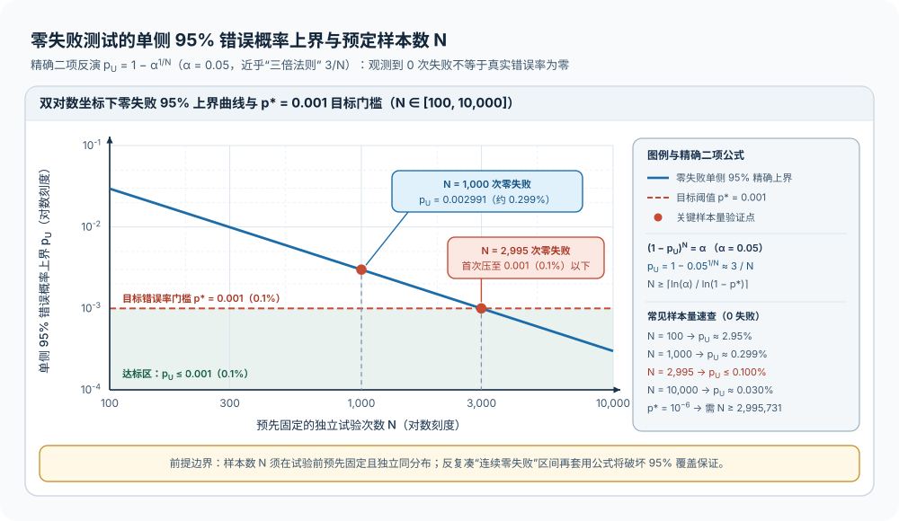
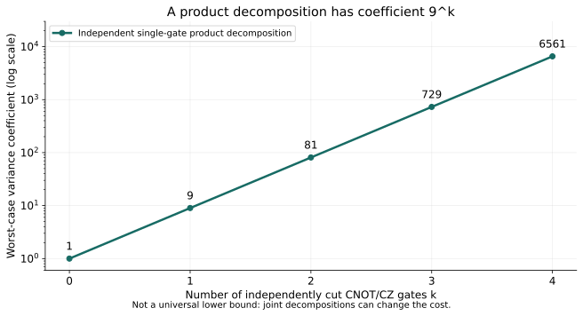

实验：有限样本、外推代价与多重比较
配套第 15 章。本页采用预设的合成计数来演示统计方法，而非真机采集数据。先自己计算，再运行完整程序，对照运行结果。Python 3.9 及以上，无第三方依赖：
python3 codes/practice/experiments.py
P15-A：同一个 Bell 点估计，为什么下界不同？
题目
三组测量分别为 XX,YY,ZZ，每次读出两比特乘积 +1 或 −1。第一份数据的 (n+,n−) 是 (775,225),(250,750),(800,200)。第二份只有中间一组改为 (25,75)。分别求 Bell 重叠点估计及至少 95% 覆盖的保守下界。
从原始计数开始
每组相关量为 c^=(n+−n−)/(n++n−)，因此两份数据都给出 (0.55,−0.50,0.60)。Bell 投影展开是
∣Φ+⟩⟨Φ+∣=4I+XX−YY+ZZ,f^=41+0.55+0.50+0.60=0.6625.
注意负号来自投影展开；不能因为 YY 的观测本来为负而再丢掉公式中的负号。
把每组自己的样本量代入
每组样本独立且有同一个期望时，取整体失败概率 α=0.05，给各组分配 α/3。Hoeffding 界和并合界给
εi=Ni2ln(6/α),f≥f^−4εX+εY+εZ.
第一份三个误差半径都是 0.0978518，下界 0.5891111。第二份中 NY=100，半径变为 0.3094347，下界降到 0.5362154。两者仍高于 1/2，但证据余量不同。若错误地把第二份也按每组 1000 次算，就虚构了不存在的精度。
程序独立从计数重算每个分母，并断言第二份下界更低。此结论还要求三组对应同一稳定制备态、测量实现可信；并合界不需要三组事件互相独立，但每组内部的 Hoeffding 假设仍需成立。漂移、校准误差和事后挑选数据不会因增加采样次数（shots）自动消失。
P15-B：为什么外推到 1.10 不代表测出了超物理态？
题目
把噪声强度缩放为 λ=1,3，得到 Pauli 期望估计 0.90,0.50。用一次多项式外推到零噪声。总预算为 4000 shots，比较均分和 3:1 分配的最坏抽样方差上界。
先算外推权重
假设这段噪声范围内 E(λ)=a+bλ。由
E(1)=a+b,E(3)=a+3b
消去 b，得到 a=23E(1)−21E(3)。于是估计器为 1.5×0.90−0.5×0.50=1.10。它是带负权重的统计外推，不是另一个物理态直接测得的精确 Pauli 期望。将结果硬裁剪为 1 会改变偏差和区间性质，不能静默处理。
固定总 shots 才能比较代价
对 ±1 输出，独立均值的方差不超过 1/Ni。若两组独立，则
Var(E^0)≤N1(3/2)2+N3(−1/2)2.
均分时 N1=N3=2000，上界是 2.25/2000+0.25/2000=0.00125。如果令 N1=rN、N3=(1−r)N，需要最小化 2.25/r+0.25/(1−r)。求导为 −2.25/r2+0.25/(1−r)2=0，解得 r=3/4。
因此分配为 3000 和 1000 次，上界变为 0.001。它仍是单个未缓解估计器最坏上界 1/4000 的 4 倍；均分时则为 5 倍。这里说的是相同总预算下的最坏方差上界，不是所有实验实测方差都固定增加 4 倍，也不是均方误差必然更差：偏差是否降低要另行验证。
 放大查看 ↗线性零噪声外推在固定总 shots 下的最坏方差上界，3 比 1 分配优于均分但仍高于单组基线
放大查看 ↗线性零噪声外推在固定总 shots 下的最坏方差上界，3 比 1 分配优于均分但仍高于单组基线
线性模型若失效、噪声缩放改变了错误种类，哪怕抽样方差很小也会出现模型偏差。可增加中间缩放点作留出诊断，但不要在同一数据上挑“最接近理想值”的模型后还沿用未挑选时的区间。
上图由绘图程序直接计算，绘图依赖见依赖清单。误差缓解工程实现可对照 Mitiq 原始软件论文及源码索引，本算例只实现线性外推的代数与代价。
P15-C：做二十次检验，再挑显著的一次
题目
假设有 20 个互相独立的检验，每个真零假设下的假阳性概率恰为 0.05。至少一次假阳性的概率是多少？若要把整体假阳性控制在至多 0.05，可如何分配阈值？
详解
一次“不误报”的概率是 0.95。独立时二十次都不误报的概率为 0.9520，所以至少一次误报为
1−0.9520≈0.641514.
这不是量子设备的特殊现象；反复换种子、换后选择阈值、换观测量也会产生类似选择问题。若检验相关，上式不再精确。
不依赖检验间独立性的简单办法是 Bonferroni 分配：每个检验使用 0.05/20=0.0025，由并合界整体不超过 20×0.0025=0.05。代价是检验可能较保守。这里的保证还要求每个检验本身有效，不能弥补数据泄漏或随结果改假设。
扩展练习：预先固定一批开发数据选择编译器参数，另留一批未使用的数据作最终比较，并分别记录预算。详解要点是“参数选择”和“最终报告”使用不同数据；这解决部分选择偏差，不证明设备不存在漂移。
P15-D：后选择更准确，为什么每次尝试反而更少成功？
题目与原始样本
下表是人为构造的任务计数，成功判据在采集前固定；“正确”只在已接受的结果中统计。它用于演示条件概率，不代表某个芯片的性能。
分别求接受率、接受后的正确率、每次原始尝试交付正确结果的频率。若所有尝试均为 10 ms、没有并行或额外启动开销，哪一种方法单位时间交付的正确结果更多？
逐步答案
A 的接受率为 800/1000=0.8，条件正确率为 720/800=0.9，联合频率为 720/1000=0.72。B 对应为 0.25,0.96,0.24。条件正确率提高了，接受率却大幅下降。
这里不需要假设“接受”和“正确”独立。直接按条件概率恒等式，
P(接受且正确)=P(接受)P(正确∣接受).
每秒 100 次尝试时，两组样本对应 72 与 24 个正确结果每秒。若任务要求接受后的正确率至少为 95%，A 在点估计层面尚未满足，B 才有进一步评估资格；不能仅凭吞吐量宣布 A 更适合。实际验收还要给条件正确率的置信下界，尤其 B 的有效样本仅 250 个。
后选择可能本来就是协议定义的一部分，例如先兆纠缠生成。问题不在于“是否允许丢弃”，而在于事先规定接受规则、保存被丢弃的次数，并同时报告质量和交付率。把接受后的计数当成原始 shots，会在统计和成本两方面同时失真。
P15-E：一千次零失败，不等于错误率为零
题目
独立重复同一操作 N=1000 次，未发现任何失败。假设每次失败概率都是同一个 p，求单侧 95% 精确二项上界。若希望在“零失败”结果出现时，上界不超过 10−3，至少应事先安排多少次测试？
从事件概率反解参数
零失败事件的概率为 (1−p)N。把该概率设为显著性水平 α=0.05，解出临界参数：
(1−pU)N=α⟹pU=1−α1/N.
代入 N=1000 得 pU=0.00299125，约 0.299%。这是一套重复实验意义下的上界规则，不是给未知固定参数 p 分配“95% 的后验概率”。精确二项法允许覆盖率高于名义值，离散计数通常使它较保守；方法定义见 NIST 精确二项区间说明（访问 2026-09-26）。
要求 pU≤p∗=10−3，先移项，再注意分母是负数：
α1/N≥1−p∗,Nlnα≥ln(1−p∗),N≥ln(1−p∗)lnα.
因此最小整数是 N=2995。这个设计只说明“若这 2995 次恰好零失败，可以得到指定上界”；它不保证实验一定零失败。若发生失败，要使用对应失败计数的完整二项反演。

放大查看 ↗零失败后的单侧 95% 错误概率上界随预定样本数降低；1000 次约 0.299%，2995 次才低于 0.1%
代码还对 N=20 的全部 21 种失败计数构造上界，再枚举 201 个真实概率点的覆盖率。网格检查能发现实现错误，覆盖定理仍来自二项检验反演，不能由有限网格代替。反复测试直到出现好看的“连续零失败”区间，再套固定 N 公式，不满足本题的预先固定抽样设计；漂移和相关失败也要另建模型。
P15-F：每个 shot 耗时不同，最优预算怎样变？
题目
仍取线性外推权重 a1=3/2,a3=−1/2。两种线路每个 shot 的成本分别为 c1=1,c3=9 个时间单位，总预算 C=9000。忽略启动、通信与并行，独立 ±1 结果的方差用最坏上界 1。均分 shots 和时间约束下的最佳分配各是多少？
先写约束，再优化
固定总时间要求 c1N1+c3N3=C，并非固定 N1+N3。由柯西—施瓦茨不等式，
(i∑∣ai∣ci)2≤(i∑Niai2)(i∑ciNi).
等号在 Ni∝∣ai∣/ci 时成立。因此 N1:N3=1.5:(0.5/3)=9:1，结合 N1+9N3=9000 得 N1=4500,N3=500。方差上界为
45002.25+5000.25=0.001.
均分 shots 时必须是 N1=N3=900，方差上界 2.5/900=0.00277778。P15-B 的 3:1 配比针对每个 shot 成本相同，不能照搬到这里。若已知各组单次标准差 σi，相同推导给 Ni∝∣ai∣σi/ci；实际需考虑整数取整和用于估计方差的先导样本预算。
P15-G：负权重不是负概率，线路切割的代价怎样算？
题目
设目标期望写成 μ=∑jajμj，其中 a=(1.5,−0.5)，μ1=0.4,μ2=−0.2；每个可运行实验返回 Xj∈{−1,+1}。设计合法随机抽样和无偏估计器，并精确算单次方差。这两项仅作统计估计教学示例，并非某个具体量子门的物理分解。
把抽样概率与结果权重分开
先取 γ=∑j∣aj∣=2。以 qj=∣aj∣/γ 抽取实验，即概率 (0.75,0.25)，再运行选中的实验。记录带符号的数值
Z=γsgn(aj)Xj.
qj 才是真正抽样概率，不能拿负的 a2 作概率。逐项取期望得
EZ=j∑γ∣aj∣γsgn(aj)μj=1.5(0.4)−0.5(−0.2)=0.7.
本例每次 Z2=4，故 Var(Z)=4−0.72=3.51。独立重复 N 次后样本均值方差是 3.51/N，一般上界是 γ2/N。这一结论描述抽样代价，不包含物理分解误差、执行噪声或模型偏差。代码枚举所有四种“选实验＋结果”分支复算，而非只代入最终公式。
与真实线路切割连接
线路切割用局部可执行操作的准概率组合重构目标统计量。原始研究中的单个 CNOT/CZ 分解在其指定操作模型中给出 γ=3，相应最坏抽样界系数为 9。若采用逐门独立的乘积分解，k 个这样的切口给系数 9k，两个是 81，四个是 6561。它不是所有切割方案的普适下界；联合多门分解研究讨论了改变分解方式后降低开销的条件（两项来源访问 2026-09-26）。

放大查看 ↗逐门独立切割方案中抽样方差上界系数为 9 的 k 次方，纵轴使用对数刻度，非所有切割方案的下界
切割减少单次所需硬件规模，却引入更多子实验和经典重构；它没有自动建立跨芯片纠缠链路。实际工程实现可对照开源实现的逐步阅读路线与本地 cutting 摘录，本题则聚焦统计估计器的无偏性与方差核算。
四组练习的代码、结果与绘图
运行 python3 codes/practice/research_checks.py，查看源程序及固定结果。无第三方依赖、无随机采样，输入均已列在题目和输出中。两张图由生成程序计算，使用与已有科学图相同的绘图依赖。